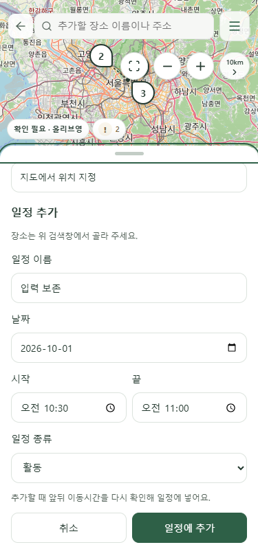
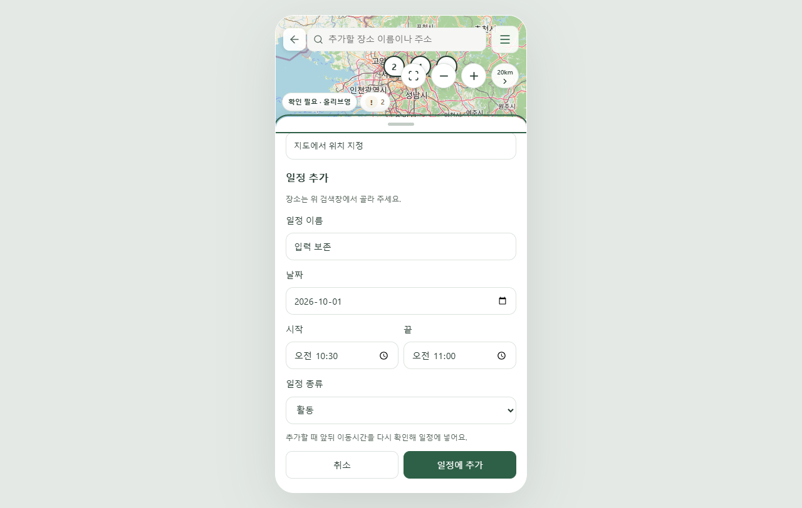
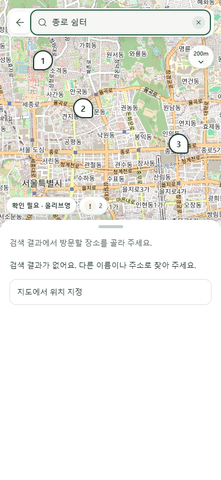
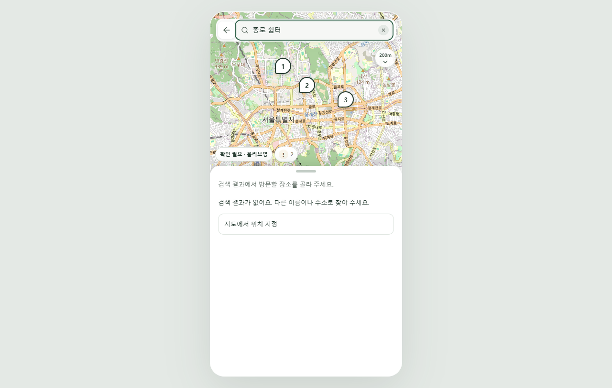
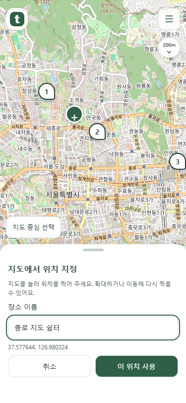
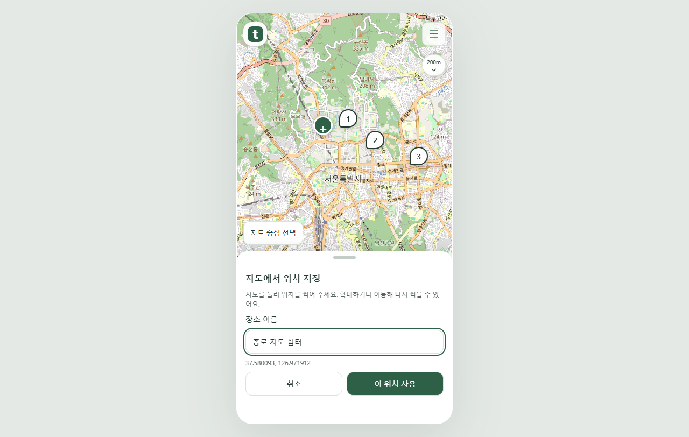
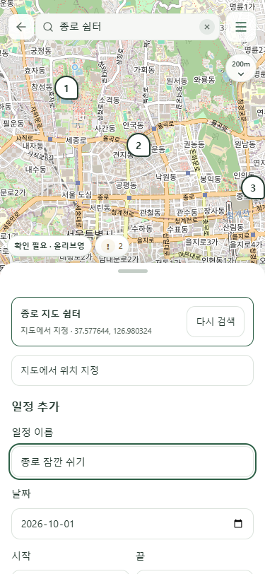
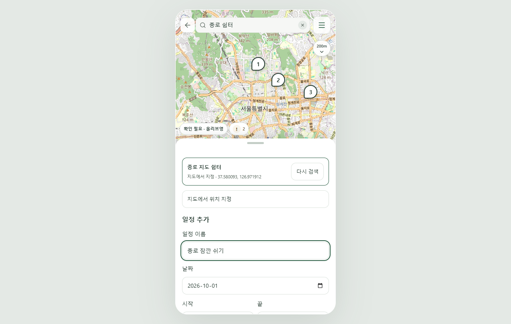

지도 도구 겹침 · 직접 위치 지정
확장 도구는 마커와 겹칠 수 있습니다. 거리와 화살표가 있는 버튼 하나만 피합니다. 검색에서 찾지 못한 장소는 지도에서 직접 찍어 추가합니다.
확장 도구와 마커 겹침 허용
확대·축소·전체 보기 도구의 영역을 비워 두지 않습니다. 거리·펼침 화살표 버튼의 위치와 방향은 유지합니다.

375px 실제 Chrome 화면
1280px 실제 Chrome 화면검색에서 찾지 못했을 때
검색 결과가 없어도 지도에서 위치 지정을 누를 수 있습니다. 검색 실패·결과가 있는 경우에도 같은 버튼을 제공합니다.

375px 실제 Chrome 화면
1280px 실제 Chrome 화면지도에 직접 찍고 확인
지도를 눌러 위치를 지정하고 이름을 입력합니다. 드래그와 도구 클릭은 위치 선택으로 처리하지 않습니다. 서울 밖은 이 위치 사용을 막습니다.

375px 실제 Chrome 화면
1280px 실제 Chrome 화면초안으로 돌아와 일정에 추가
확인한 좌표를 표시하고 작성하던 일정 이름·날짜·시각을 유지합니다. 일정에 추가를 누를 때만 저장합니다.

375px 실제 Chrome 화면
1280px 실제 Chrome 화면